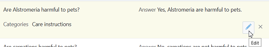
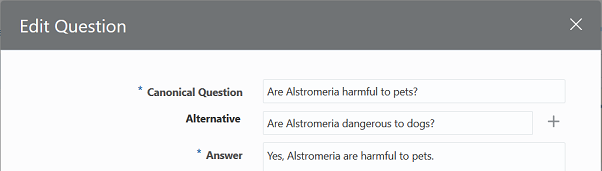
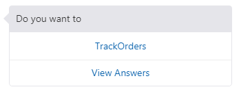
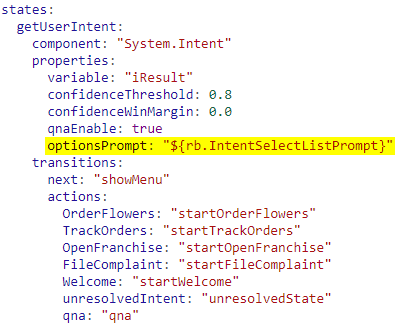
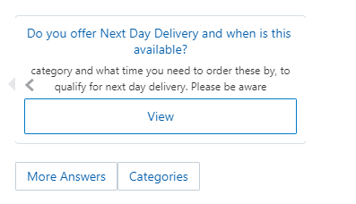
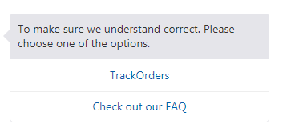
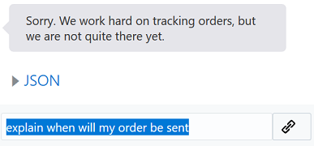

Oracle Intelligent Bots Advanced Training - Lab 2 (QnA)
Oracle Intelligent Bots Advanced Training - Lab 2 (QnA)As well as dealing with the transactions of ordering flowers, the 24hrsflowers bot will also attempt to answer common questions about looking after flowers, delivery and packaging. Usually this would be handled by an FAQ page on a website or by a service agent. As the builder of 24hrsflowers chatbot, you think it would be good to incorporate those existing FAQs into the bot.
In this lab you will take the existing FAQ document from here (<pk: add link>) and upload it into the bot. You will then enable the QnA feature for the bot and fine tune the searching and display of the QnA.
 Prerequisites
Prerequisites
- On the main Bots page in your instance, locate the tile for the
advt24hrsflowers_bot2, click , select Clone, and name the clone
, select Clone, and name the clone advt24hrsflowers_bot2<YourInitials>. - Locate the tile for your clone of the bot (using the Search field might help) and click it to open the bot.
- Download the QnA file. (<pk: add link>)
 Upload and Enable the FAQ
Upload and Enable the FAQ
You will now upload the FAQ document into the bot and enable it within the conversation flow. Currently Oracle Intelligent Bots requires the questions in a .csv file, which we have provided here (<pk: add link>).
- In the left navigation of your bot, click .
- Click + Q&A.
- Click + Q&A Source.
- Set the language to English, name the source
FlowersQnA, and drag the CSV file that you downloaded at the beginning of this lab into the dialog. - Click Create.
- Train the bot (by clicking
 and making sure that Q&A Training option is checked for your bot).
and making sure that Q&A Training option is checked for your bot).
 Test in the QnA Tester
Test in the QnA Tester
Having uploaded and trained the bot with your frequently asked questions, you will now test in the QnA tester. (The FAQ does not have to be enabled within the conversation flow to work in the tester.)
- Click .
- Open the tester by clicking
 and clicking its Q&A tab.
and clicking its Q&A tab. - In the tester, click the Q&A link.
- Try the following or similar phrases.
- Can I track an order
- How are the flowers delivered
- What is the lifespan for tulips
- Do you deliver to the UK
- what if the person isn't at home for the delivery
In each of the above cases, you should see a response which is accurate for the question, even where the questions slightly vary from the ones included in the QnA source.
 Add QnA to your Dialog Flow
Add QnA to your Dialog Flow
Having done some basic testing of your QnA functionality, you now want to add QnA to the dialog flow.
- Click
 .
. - Locate the
getUserIntentstate in the flow. - Update the state by:
- Setting the value of
qnaEnabletotrue. - Adding the following entry under
transitions: actions:qna: "qna"
The changes are highlighted in bold in the sample here:
states: getUserIntent: component: "System.Intent" properties: variable: "iResult" confidenceThreshold: 0.8 confidenceWinMargin: 0.0 qnaEnable: true transitions: next: "showMenu" actions: OrderFlowers: "startOrderFlowers" TrackOrders: "startTrackOrders" OpenFranchise: "startOpenFranchise" FileComplaint: "startFileComplaint" Welcome: "startWelcome" unresolvedIntent: "unresolvedState" qna: "qna"
- Setting the value of
- Add the
System.QnAcomponent by copying and pasting the following code to the end of the flow:qna: component: "System.QnA" transitions: actions: none: "unresolvedState" next: "getUserIntent"This enables QnA in your dialog flow.
- Now open the tester by clicking , click the Bot link (not the Q&A link) and retest your bot with some of the phrases from part 2 of the lab above.
 Add Synonyms
Add Synonyms
In the previous exercise, you saw the QnA feature work on a basic level. Now let's try testing the QnA with more challenging phrases to see if it'll still respond with the correct answers and, if not, figure out how to tune it.
In this case, you know that many of the people using your bot are expert horticulturists. So it stands to reason they'll often use formal names for flowers when speaking to the bot.
Open the tester (by clicking ), and ask the following questions:
- What is the lifespan of the common sunflower
- What is the lifespan of a carnation
In each case you should get back an answer which is specific to each of those flowers.
Now let's try using alternate names for those flowers.
- what is the lifespan of a Helianthus
- what is the lifespan of a Dianthus
In this case, the QnA is not returning the correct answers because Helianthus and Dianthus are not terms it has been trained with. You could update each question with an alternate question that includes these scientific names. However, since the terms could be used in other questions, a better option is to set up a synonym.
- Click and click Language Config.
- Click + Config Entry.
- In the Add Language Config dialog, click the Type dropdown and select Synonym.
- In the Definition field, enter
carnations(and press Enter) anddianthus(and Press Enter). They should appear as two separate entries in the field.This will define these two terms as synonyms of each other.
- Click Create.
- Train the bot (by clicking ).
- Repeat steps 2-5 for
sunflowersandhelianthus. - In the tester (), enter the phrase:
what is the lifespan of a dianthusThe response should include "carnation" in the text.
- Now try
what is the lifespan of a helianthus.The response should mention sunflowers.
- Now see what you get when you enter:
is helianthus harmful to my dog - You may also want to try these:
what is the lifespan of rosawhat is the lifespan of a Lilium
You should get responses for roses and lillies, respectively. Even though you haven't set up synonyms for these, the bot recognizes them through fuzzy matching.
 Add Alternate Questions
Add Alternate Questions
QnA is based on searching words and, as you might expect, users are likely to use words which don’t appear within the primary question and answer. You can therefore add additional questions. In this section you'll add alternate questions to handle those cases.
In the tester, enter:
are any of the flowers dangerous to dogs
Note that the response doesn't answer the question. The reason for this is that the question uses words such as “dangerous” and “dogs” rather than “harmful” and “pets”. You could define synonyms, but let's try another approach and add an alternate question instead.
- Click Data Sources and click View All Q&A.
- In the Filter by question, answer, or source field, enter
pets, and click Search. - For each of the questions of the form “Are <flowername> harmful to pets”, click the Edit button:
 - In the dialog, and add an alternate question of the form “are <flowername> dangerous to dogs".
 - Click the Close button to return to the main QnA page.
- Train the bot (by clicking ).
- In the tester (), enter the phrase:
are any of the flowers dangerous to dogsScroll through the answers. You may get a variety of responses, most of which should be relate to the question about whether flowers are harmful to pets. However, you might alse see a response which is NOT about pets. Why might this be?
 Add Ignore Words
Add Ignore Words
In the previous test, when asking “are any of the flowers dangerous to dogs”, you may have gotten a response unrelated to pets, e.g. regarding whether the flowers arrive in water. This is because the word “flower” is very prevalent in many other questions as well.
Taking this a step further, we can probably say that the word "flowers" is relevant for pretty much every question for an online store selling flowers. As a result, this word doesn't really add anything to the search quality. It may even be beneficial to have such words ignored in the search.
Let's add a few words to the ignore list:
- Click and click Language Config.
- Click + Config Entry.
- In the Add Language Config dialog, click the Type dropdown and select Ignore words.
- In the Definition field, enter
flowers(and press Enter) and24hrsflowers(and Press Enter). They should appear as two separate entries in the field. - Click Create.
- Train the bot (by clicking ).
- In the tester (), enter the phrase:
are any of the flowers dangerous to dogsYou should now find the bot returns the correct article since it is no longer matching against “flowers”.
 Fine-tune the display of the QnA
Fine-tune the display of the QnA
How your QnA is presented to the user is configurable in a number of ways. Your next task will be to define those changes.
- In the tester (), enter the phrase:
when will my order be deliveredThe bot responds by showing two possible options: TrackOrder and a QnA.

You might want to make this message more descriptive.
- Click .
- Add the following property for the
getUserIntentstate:optionsPrompt: "${rb.IntentSelectListPrompt}"The screenshot below shows where the line should be placed.

The next time that dialog appears, it will get its value from the resource bundle. We'll cover resource bundles in a subsequent lab.
- You might also want to change the default string which says “view answers”.
Add the following right below the property you just added:
optionsQnaLabel: "${rb.mainIntentOptionsQnALabel}" - Now change the default label for searching through the QnA.
The current default is “Categories” as shown here.

At the bottom of the dialog flow, in the Qna state, add this code:
properties: categoriesLabel: "${rb.qnaCategoriesLabel}"
Fine-tune the routing of the QnA
When a question is submitted by the user, we now know that this could be interpreted as an intent or a question. There are a number of different options to allow you to decide how that is presented to the user.
Currently when you ask the question “when will my order be sent”, you get a response such as:
In this case, the intent is first in the list. Now let’s assume you would rather direct the user to the FAQ first.
- In the left navigation of your bot, click
 .
. - Select the Q&A Routing Config tab.
- Scroll down to the Question Config section and add the word
when.This indicates that “when” is a word typically associated with QnA and hence will put QnA first in the dialog.
- In the tester (), enter the phrase:
when will my order be sentThe FAQ should now appear first.
There are situations when you know that certain phrases apply a certain amount of urgency or authoritiveness to a user request, which indicates we should deal with the input as a specific intent rather than an FAQ. To accomplish this, we can define phrases or verbs for which the bot should then give weight to this being an intent.
- In the tester (), enter the phrase:
Larry says when will my order be sentThis should return the option to view the intent or the QnA.
- In the left navigation of your bot, click .
- Select the Q&A Routing Config tab.
- In the Request Sentence Prefix field, add
Larry says. - Rerun the test.
The response should show that the intent for tracking orders was resolved immediately rather than giving the option to choose QnA.
You will also notice that subtle changes in the sentence input can influence whether the bot will process the input as an intent or QnA. This is related to the use of imperative verbs which act as a command and hence influence the bot to deal with the input as an intent.
- In the tester (), enter the phrase:
when will my order be sentThis could be an FAQ or intent.
- Now enter the phrase:
explain when will my order be sentBecause of the imperative ("explain"), the bot just responds to the intent.
 - Now let's run the following two phrases through the tester to see if there are any differences between them:
advise on when will my order be sentadvice on when my order will be sentThe first sentence is an imperative ("advise") and the second isn't. So you can see how just a one-letter difference can have a big impact on how the phrases are handled.